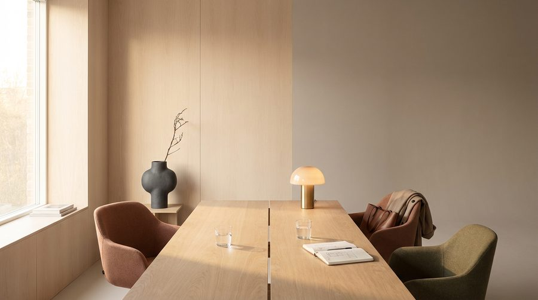

Music Lessons
Looking for a music teacher in San Diego, California? Based in La Jolla, Maya Goell teaches voice, piano, and music theory at all levels.
FAQ’s
Am I old enough/ good enough/ talented enough to study music?
Yes. next question.
What instruments do you teach?
I specialize in voice, but I also teach piano, guitar, ukulele, and bass.
What are your qualifications? Why should I study with you?
There are lots of music teachers out there, so what sets me apart? I am a professional opera singer, so not only do I have a comprehensive understanding of classical vocal technique, but I also know what it takes to make a career out of music. I take pride in helping my students cultivate not only technical ability, but also artistic sensibility, musical literacy, and the joy of music in their artistic practices.
What is your experience teaching?
I have been teaching in some capacity for more than a decade. I have taught privately as well as with institutions such as Cal State University San Marcos, Leading Note Studios, and am currently a teaching artist with the San Diego Opera.
What kinds of music do you teach?
My wheelhouse is definitely classical style. I have been performing professionally for years, and classically training for more than a decade. That being said, I also have professional experience in a multitude of styles including pop, jazz, and musical theater.
What to expect
Depending on level and instrument, I like to spend about half the session doing warm-ups and technical patterns and the second half developing repertoire.


This strikes the perfect balance between discipline and creative exploration. Plus, students will leave lessons with a body of work they can take anywhere from the practice room to auditions to concerts!